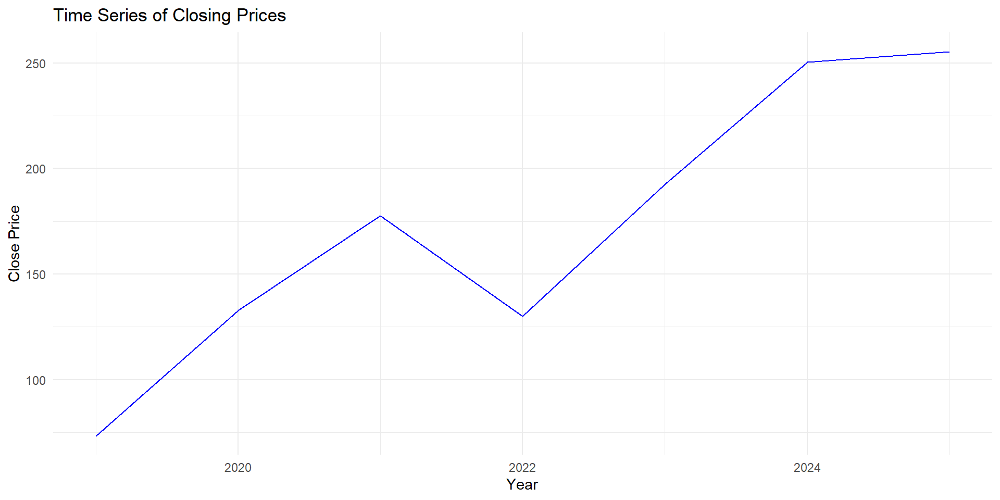
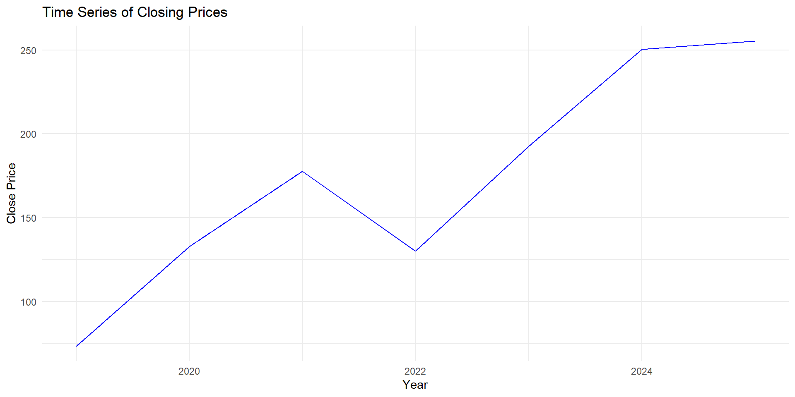

Lisbon Accounting and Business School – Polytechnic University of Lisbon
Instructor: Paulo Fagandini
üìß pfagandini@iscal.ipl.pt
Main source for course material: Moodle@ISCAL
Alternative source (EN): pfagandini.github.io/statistics1.html
Official communication channel: üìß Institutional Email
üìñ The making of index numbers. 1st Ed 1922. Irving Fisher. üìñ A Practical Introduction to Index Numbers. 1st Ed 2015. Jeff Ralph, Rob O‚ÄôNeill, Joe Winton.
üìñ Statistics for Business and Economics Global Edition. 10th Ed 2022. Paul Newbold, William Carlson, and Betty Thorne.
This last book is a bit expensive, but it can be rented for less money here. The Publisher kindly offered a 25% discount with the code MISLIBROS2025. This code is valid for the whole site until December 31st , 2025.
| Assessment Element | Weight (%) | Duration | Syllabus | Date |
|---|---|---|---|---|
| Midterm | 60% | 80 minutes | Topics 1 and 2 | Week Nov 11-15 |
| Partial Exam | 40% | 80 minutes | Topic 3 | Regular Exam Date |
Each test has a minimum grade of 7.00 (out of 20), not 6.9, not 6.95.
Students may opt, on the day of the Exam, to take an Exam worth 100% of the grade. This Exam will cover Topics 1, 2, and 3.
If you score less than 7.00 in the Midterm, or if you cannot attend the midterm for whatever reason, you will have to do the Comprehensive Exam.

Source: Yahoo Finance
| Date | Close |
|---|---|
| 2019 | 73.41 |
| 2020 | 132.69 |
| 2021 | 177.57 |
| 2022 | 129.93 |
| 2023 | 192.53 |
| 2024 | 250.42 |
| 2025 | 229.35 |
Let the close price for Apple be represented by the variable \(y_t\), so \(y_{2019}\) is the close price we got for2019 (i.e. 73.41).
How much did \(y\) grow between 2019 and 2020?
\[\Delta y_{2020} = y_{2020} - y_{2019} = 132.69 - 73.41\] \[=59.28\]
Or we could say
\[y_{2020} = y_{2019} + \Delta y_{2020}\] \[132.69 = 73.41 + 59.28\]
\[y_{2020}=y_{2019}+\Delta y_{2020}\]
\[y_{2020}=y_{2019}\left(1+\frac{\Delta y_{2020}}{y_{2019}}\right)\]
\[y_{2020}=y_{2019}\left(1+\delta^y_{2020}\right)\]
This, \(\delta_{2020}^y\), is the growth rate of \(y\) at year2020.
Growth Rate
Let \(y_t\) be a variable that might take different values over time. The growth rate at \(t\) is given by \(\delta_t^y\), and takes a value such that:
\[y_t=y_{t-1}\left(1+\delta_t\right)\]
And then
\[\delta_t = \frac{y_t-y_{t-1}}{y_{t-1}}\]
Note: I dropped \(y\) from the notation in the formula because it is obvious that we are talking about the variable \(y\).
You can write the growth rate as a decimal or as a percentage. If you use decimal notation, consider at least 4 places, if you use percentage you use at least 2. Example: 0.0123 or 1.23%.
Interpretation: What is the percentage change for the variable \(y\) between \(t-1\) and \(t\).
\[132.69 = 73.41+(132.69 - 73.41)\]
\[132.69 =73.41\left(1+\frac{59.28}{73.41}\right)\]
\[132.69=73.41\left(1+0.8075\right)\]
In this case \(\delta_{2020}^y =0.8075 = 80.75%\).
Interpretation: Between and 2019, the price for Apple increased 80.75%.
More generally \[\delta_{t+k|t}=\frac{y_{t+k}-y_t}{y_t}\]
Or \[y_{t+k}=y_t(1+\delta_{t+k|t})\]
(homework: Show step by step how you go from one to the other.)
Note: In this case \(\delta_{t+k|t}\) is what percentage the variable changed from \(t\) to \(t+k\), and \(k\) is the number of periods.
We had \(y_{2019}=73.41\), and \(y_{2023} =192.53\). We will try to find \(\delta_{2023|2019}^y\)
\[k=2023-2019=4\]
\[\delta_{2023|2019}^y = \frac{192.53 - 73.41}{73.41} = 1.6227 = 162.27\%\]
For Apple, the stock price grew 162.27% between 2019 and 2023, or the stock price for Apple in 2023 is 162.27% larger than in 2019.
Warning
You should be careful with your interpretation and use of this cumulative growth rate, because it does not mean that \(y\) grew \(\delta_{t+k|t}^y\) per period between \(t\) and \(t+k\).
Average Growth Rate
Let \(y_t\) be a variable that might take different values over time. The average growth rate betweek \(t\) and \(t+k\) is given by \(\overline{\delta}_{t+k|t}^y\), and takes a value such that:
\[y_{t+k}=y_t\left(1+\overline{\delta}_{t+k|t}\right)^k\]
I dropped \(y\) from the notation in the formula because it is obvious that we are talking about the variable \(y\).
Let’s start with \(y_t\)… and the traditional growth rates \(\delta_t\):
\[y_{t+1} = y_t(1+\delta_t)\]
\[y_{t+2} = y_{t+1}(1+\delta_{t+1})\]
\[y_{t+3} = y_{t+1}(1+\delta_{t+2})\]
Can we write \(y_{t+2}\) as a function of \(y_t\)?
\[y_{t+2} = y_{t+1}(1+\delta_{t+1}) = y_{t}(1+\delta_t)(1+\delta_{t+1})\]
And \(y_{t+3}\)?
\[y_{t+3} = y_{t}(1+\delta_t)(1+\delta_{t+1})(1+\delta_{t+2})\]
Generalizing
\[y_{t+k}=y_t (1+\delta_t)(1+\delta_{t+1})...(1+\delta_{t+k-1})\]
When computing the average growth rate, we are trying to find \(\overline{\delta}\) such that if the growth rate was the same every period, it would have taken \(y_t\) to the value of \(y_{t+k}\) all the same:
\[y_{t+k}=y_t(1+\overline{\delta})(1+\overline{\delta})...(1+\overline{\delta})\]
How many times is \((1+\overline{\delta})\) multiplied in the expression?
\[y_{t+k} = y_t \left(1+\overline{\delta}\right)^k\]
\[\frac{y_{t+k}}{y_t} = \left(1+\overline{\delta}\right)^k\]
\[\left(\frac{y_{t+k}}{y_t}\right)^{1/k} = \left(1+\overline{\delta}\right)\]
\[\left(\frac{y_{t+k}}{y_t}\right)^{1/k} - 1 = \overline{\delta}\]
\[\overline{\delta}_{t+k|t}=\left(\frac{y_{t+k}}{y_t}\right)^{1/k} - 1\]
We had \[\delta_{2023|2019}^y = \frac{192.53 - 73.41}{73.41} = 1.6227 = 162.27\%\]
But what now is the average growth rate between 2019 and 2023?
Remember \(k = 4\)
\[ \overline{\delta} = \left(\frac{192.53}{73.41}\right)^{1/4} - 1 \approx 0.2726= 27.26\% \]
Interpretation: On average, between 2019 and 2022 \(y\) grew 27.26% every year.
Note that \[ (1+27.26\%)^4 = (1+0.2726)^4 \approx 2.6227\approx 1 + 162.27\% \]
Which stock would you have purchased in 2015-08-12?
What’s the important question here?
Which one grew more! For this, levels are not as relevant as their evolution over time.
For example, say we have prices for two stocks A and B. Say we want to hold these stocks for only one period, which one would choose to invest your hard earned üíµ?
How many stocks will you be able to buy of each stock, if their prices are \(a_t\) and \(b_t\), and you have US$1000?
\(n_a=\frac{1000}{a_t}\) of stock A and \(n_b=\frac{1000}{b_t}\) of stock \(B\). Note that \(n_a\) and \(n_b\) are the amount of stock you can buy of each.
Now is a new day üåÑ! Prices are now \(a_{t+1}\) and \(b_{t+1}\), how much is your portfolio worth today?
If you bought stock A: \(a_{t+1} n_a = a_{t+1}\frac{1000}{a_t}\)
If you bought stock B: \(b_{t+1} n_b = b_{t+1}\frac{1000}{b_t}\)
Note that the 1000 is fixed, so it is just what we invested, it is not going to change anything in our decision on buying A vs B, what is really important is \(\frac{a_{t+1}}{a_t}\) and \(\frac{b_{t+1}}{b_t}\), that is the growth rate of prices for each stock, as
\[\frac{a_{t+1}}{a_t}=1+\delta_{t+1}^a \quad\text{and}\quad \frac{b_{t+1}}{b_t}=1+\delta_{t+1}^b\]
You did not sell and…
Now is (another) new day üåÑ! Prices are now \(a_{t+2}\) and \(b_{t+2}\), how much is your portfolio worth today?
If you bought stock A: \(a_{t+2} n_a = a_{t+2}\frac{1000}{a_t}\)
If you bought stock B: \(b_{t+2} n_b = b_{t+2}\frac{1000}{b_t}\)
blah, blah…
\[\frac{a_{t+2}}{a_t}=1+\delta_{t+2}^a \quad\text{and}\quad \frac{b_{t+2}}{b_t}=1+\delta_{t+2}^b\]
If we wait two days, we only care how is the price today compared to when we made the purchase. We could make instead a plot of \(1+\delta_{t+k}\) to see which grew more!
Now we have a much clear picture. We can compare their evolution starting in 2015-08-12.
What can you read from the plot?
Note that for 2015-08-12, we would have, for A and B:
\[1+\frac{a_t-a_t}{a_t}=1\quad\text{and}\quad 1+\frac{b_t-b_t}{b_t}=1\]
We just built and index number!
By convention though, instead of using 1 for the reference date, we will use 100 (as in 100%) for the reference day (we will put a name to this in a few moments).
When our new series was 2, we understood that \(1+\delta_{t+k}=2\) or \(\delta_{t+k}=1\), i.e. the price grew 100%, or doubled! Now, with the new notation, we would have that the new series would take the value of 200, i.e. the price is now 200% the value it had at our initial date.
Index Number
An Index Number is a scaled variable that takes as a reference point the value an underlying variable took at a fixed point in time. Say, for an underlying variable \(x_t\) we build an index \(I_t\).
\[I_t=\frac{x_t}{x_0}\times 100\]
Where \(x_t\) is the value the underlying variable takes at time \(t\), and \(x_0\) represents the value this variable took at our reference point. This period is called base.
Note: In this case we used time as the dimension for \(t\) but this needs not be the case, we will see examples later.
In our previous example, the base day would have been 2015-08-12. Note that in the base period \[I_0=\frac{x_0}{x_0}\times 100 = 100\]
Index Numbers are defined by their underlying variable. This can change over time, or it can change according to another dimension, like geography, or both! We will see examples.
Also, an Index Number can have a fixed base or a moving base.
Index Numbers
| Type | Example |
|---|---|
| Simple | Single stock price |
| Composite | SP500 (market index), CPI |
| Fixed Base | GDP, CPI, market index |
| Rolling Base | Some measures of GDP, Commodities Futures |
| Chronological | Stock price over time, CPI, GDP |
| Geographical | BigMac Index |
Importantly, an index number is no bueno to reflect the level of a variable, but its evolution or relative value against a base.
Chain or Link Index
A Chain or Link Index Number is an index number that updates its base in every period.
\[I_t = \frac{x_t}{x_{t-1}}\times 100\]
Interpretation: It tells you how much the variable increased compared to the previous period.
Index numbers allow us to easily compute the growth rate between any two periods, just like we would do with the underlying variable:
\[1+\delta_{t+k,t}=\frac{x_{t+k}}{x_t}=\frac{x_{t+k}}{x_t}=\frac{\frac{x_{t+k}}{x_0}}{\frac{x_t}{x_0}}=\frac{I_{t+k}}{I_t}\]
\[1+\delta_{t+k,t}=\frac{x_{t+k}}{x_t}=\frac{x_{t+k}}{x_{t+k-1}}\frac{x_{t+k-1}}{x_{t}}=\frac{x_{t+k}}{x_{t+k-1}}\frac{x_{t+k-1}}{x_{t+k-2}}\frac{x_{t+k-2}}{x_{t}}=\frac{x_{t+k}}{x_{t+k-1}}\frac{x_{t+k-1}}{x_{t+k-2}}...\frac{x_{t+1}}{x_{t}}\]
\[1+\delta_{t+k,t}=I_{t+k}\times I_{t+k-1}\times ... \times I_{t+2} \times I_{t+1}\]
Do not use 100 index when multiplying chain or link indices, use the decimal notation.
Note that if the underlying variable does not change at all, you should expect the same value, \(x_t=x_{t+1}=x_{t+2}\)
In this case \(I_{t+1}=\frac{x_{t+1}}{x_t}=1\) and \(I_{t+2}=\frac{x_{t+2}}{x_{t+1}}=1\), and therefore \[1+\delta_{t+2,t}=1\times 1= 1\]
This is the correct way to do it ✅.
But if instead you used the 100 to multiply: \[1+\delta_{t+2,t}=100\times 100= 10000\] and we get that \(x\) grew 100 times! (❌ because we know that \(x_t=x_{t+1}=x_{t+2}\))
We can always transform a chain index number into a fixed base index number.
Chose a reference, for example for period 3.
Remember: what you want to achieve: \(\forall t, I'_t=\frac{x_t}{x_3}\)
Remember: that we have \(I_t=\frac{x_t}{x_{t-1}}\)
Use what we did just before:
\[ I_t' = I_t I_{t-1} ...I_{4} = \frac{x_t}{x_{t-1}}\frac{x_{t-1}}{x_{t-2}}...\frac{x_4}{x_3}=\frac{x_t}{x_3}=I'_t\]
Suppose we want to convert this Chain Index into Fix Base index, with the base year in 2020. This will be our 100.
| 2020 | 2021 | 2022 | 2023 | 2024 | 2025 | |
|---|---|---|---|---|---|---|
| Price | 30 | 34 | 37 | 35 | 36 | 39 |
| \(\frac{34}{30} 100\) | \(\frac{37}{34} 100\) | \(\frac{35}{37} 100\) | \(\frac{36}{35} 100\) | \(\frac{39}{36} 100\) | ||
| \(I_{chain}\) | 113.3 | 108.8 | 94.6 | 97.1 | 108.3 | |
| \(100\frac{113.3}{100}\) | \(113.3\frac{108.8}{100}\) | \(123.3\frac{94.6}{100}\) | \(116.7 \frac{97.1}{100}\) | \(120\frac{108.3}{100}\) | ||
| \(I_{t|2020}\) | 100 | 113.3 | 123.3 | 116.7 | 120 | 130 |
Note that, for example in 2024, we have \(I_{2024|2020}=116.7\), which was computed as \(123.3\times\frac{94.6}{100}\). But \(123.3\) was the base 2020 index of the previous period, which in turn was computed as \(113.3\frac{108.8}{100}\), so in reality:
\[116.7=123.3\frac{94.6}{100}=113.3\frac{108.8}{100}\frac{94.6}{100}=100\frac{113.3}{100}\frac{108.8}{100}\frac{94.6}{100}\]
If you pay attention, wou will see that we have there the product of the chain Index in 2021, 2022, and 2023. We divided by 100 because, to multiply, we need to divide by 100 before.
In case we have the data, we just need to compute the Index with the base that we want, however, if we do not have the data, and we just have a Fix Base index, we can do it all the same!
Say we have an index with base 0. Maybe we want to change it to base 2.
| period | Index | Formula |
|---|---|---|
| 0 | \(I_{0|0}\) | \(\frac{x_0}{x_0}\) |
| 1 | \(I_{1|0}\) | \(\frac{x_1}{x_0}\) |
| 2 | \(I_{2|0}\) | \(\frac{x_2}{x_0}\) |
| 3 | \(I_{3|0}\) | \(\frac{x_3}{x_0}\) |
| … | … | … |
| t | \(I_{t|0}\) | \(\frac{x_t}{x_0}\) |
| period | Index | Formula |
|---|---|---|
| 0 | \(I_{0|2}\) | \(\frac{x_0}{x_2}\) |
| 1 | \(I_{1|2}\) | \(\frac{x_1}{x_2}\) |
| 2 | \(I_{2|2}\) | \(\frac{x_2}{x_2}\) |
| 3 | \(I_{3|2}\) | \(\frac{x_3}{x_2}\) |
| … | … | … |
| t | \(I_{t|2}\) | \(\frac{x_t}{x_2}\) |
But how can we transform them, if we do not know \(x_i\) \(\forall i\)?
\[I_{t|2}=\frac{x_t}{x_2}=1\frac{x_t}{x_2}=\frac{1/x_0}{1/x_0}\frac{x_t}{x_2}=\frac{\frac{x_t}{x_0}}{\frac{x_2}{x_0}}=\frac{I_{t|0}}{I_{2|0}}\]
And that is how we can re-base an index without knowing the value for the underlying variable (\(x_t\))!
Mixing up stuff
Previously we covered how to go from a chain index to a fixed base one. Now we saw how to change the base of a fixed base index. With both things together you can turn a chain index into fixed base one, with base you want!
| 2020 | 2021 | 2022 | 2023 | 2024 | 2025 | |
|---|---|---|---|---|---|---|
| Price | 30 | 34 | 37 | 35 | 36 | 39 |
| \(I_{t|2020}\) | 100 | 113.3 | 123.3 | 116.7 | 120 | 130 |
| \(\frac{100}{123.3}\) | \(\frac{113.3}{123.3}\) | \(\frac{123.3}{123.3}\) | \(\frac{116.7}{123.3}\) | \(\frac{120.0}{123.3}\) | \(\frac{130.0}{123.3}\) | |
| \(I_{t|2022}\) | 81.1 | 91.9 | 100 | 94.6 | 97.3 | 105.4 |
New information? Yes! For example, without any computation we know that the price in 2025 was 30% larger than in 2020, and 5.4% larger than in 2022
We can test the properties for Simple Index Numbers. These represent desirable properties for good index numbers.
Circularity test: The index at \(t\) base \(0\) should be the product of all the link index numbers up to \(t\), \[i_{t|0}=i_{t|t-1}\times i_{t-1|t-2}...i_{2|1}\times i_{1|0}\] This formalizes the relationship between fixed base and chain index numbers.
Homogeneity test: If the variable, for every \(t\) is multiplied by a constant, the index should not be affected.
Ask yourself, what information are you getting here?
A value of \(0\) might also be problematic, although it is not totally meaningless. The problem arises when you want to deal with chain index numbers, where a \(0\) would indeterminate the rest of the chain. Also, you could never use as a base period, a period where the variable took the value of \(0\).
Composite Index Numbers (a.k.a. Aggregate Index Numbers)
Composite Index Numbers are index numbers that have more than a single underlying variable, or which underlying variable is computed itself as a combination of other variables.
A composite index tracks the combined evolution of multiple phenomena at the same time. It summarizes how a diverse group of elements changes over time.
Example: The performance of a class, measured by the average grade. The average is computed with each individual grade, and therefore if we make an index based on the average of the class, we would have a composite index number.
This is a great opportunity to introduce another classification for our index numbers:
Typically, values are collected in nominal terms, i.e. current prices, which is a value.
\[v_t=p_t\times q_t\]
Note that, if \(\delta_{t+1}^v\) is the growth rate of \(v_t\):
\[v_{t+1} = v_t\left(1+\delta_{t+1}^v\right)\]
and obviously, it is also true that:
\[v_{t+1} = p_{t+1}\times q_{t+1}\]
But if we let \(\delta_{t+1}^p\) be the growth rate of prices, and \(\delta_{t+1}^p\) the growth rate of quantities we can rewrite \(v_{t+1}\) as:
\[v_{t+1}=p_t\left(1+\delta_{t+1}^p\right)q_t\left(1+\delta_{t+1}^q\right)\]
\[v_{t+1} = p_tq_t(1+\delta_{t+1}^p)(1+\delta_{t+1}^q)\]
\[v_{t+1} = v_t(1+\delta_{t+1}^p)(1+\delta_{t+1}^q)\]
\[v_{t}(1+\delta_{t+1}^v) = v_t(1+\delta_{t+1}^p)(1+\delta_{t+1}^q)\]
üí°
\[(1+\delta_{t+1}^v) = (1+\delta_{t+1}^p)(1+\delta_{t+1}^q)\]
\(\delta_t^v\) is what we call nominal change rate, while \(\delta_t^q\) is what we call real change rate. We can find out the real change rate (\(\delta^q\)), if we know the nominal change rate (\(\delta^v\)), and the prices change rate (\(\delta^p\)):
\[\left(1+\delta_{t}^q\right) = \frac{\left(1+\delta_t^v\right)}{\left(1+\delta_t^p\right)}\] \[\delta_{t}^q = \frac{\left(1+\delta_t^v\right)}{\left(1+\delta_t^p\right)}-1\]
Suppose we have index numbers for \(v\), \(q\), and \(p\), all with base \(b\) (remember you can re-base your index numbers easily if they do not share the same base).
\[I_{t|b}^q = \frac{I_{t|b}^v}{I_{t|b}^p}\]
\[\frac{q_t}{q_b} = \frac{\frac{v_t}{v_b}}{\frac{p_t}{p_b}}\] \[\frac{q_t}{q_b} = \frac{\frac{p_tq_t}{p_bq_b}}{\frac{p_t}{p_b}}=\frac{p_tq_t}{p_bq_b}\frac{p_b}{p_t}=\frac{q_t}{q_b}\]
| 2021 | 2022 | 2023 | 2024 | 2025 | |
|---|---|---|---|---|---|
| Sales Index | 99 | 100 | 107 | 110 | 111 |
| Price Index | 95 | 100 | 102 | 106 | 109 |
Let’s find the quantities index, with base 2022. Immediately we can fix \(i_{t|b}^q=100\).
\[I_{2021}^q=\frac{I_{2021}^v}{I_{2021}^p}=\frac{99}{95}=1.04\]
Then \(I_{2021} = 104\), quantities decreased from 2021 to 2022!
| 2021 | 2022 | 2023 | 2024 | 2025 | |
|---|---|---|---|---|---|
| Quantities Index | 104.21 | 100 | 104.9 | 103.77 | 101.83 |
| 2021 | 2022 | 2023 | 2024 | 2025 | |
|---|---|---|---|---|---|
| Quantities Index | 104.21 | 100 | 104.9 | 103.77 | 101.83 |
Now we can compute what was the real change rate between 2024 and 2025:
\[\delta_{2025}=\frac{102}{104}-1=-0.0187=-1.87\%\]
Real sales decreased 1.87% from 2024 to 2025.
Let’s check:
\[\delta_{2025}^q=\frac{(1+\delta_{2025}^v)}{(1+\delta_{2025}^p)}-1=\frac{111/110}{109/106}-1=0.9813-1\] \[\delta_{2025}^q=-0.0187=-1.87\%\]
Basket üß∫
Basket are sets of goods, which are used to track the evolution of, for example, a price level.
In economics, we often use price and quantity index numbers to measure how the prices or quantities of a set of goods (a basket) change over time.
A very important question: What are the weights that the different goods should have in the basket?
From the family of formulas to create weighted composite index numbers, we will focus on the two most common:
Laspeyres: uses base-period quantities (prices) as weights.
Paasche: uses current-period quantities (prices) as weights.
These are used to measure the evolution of prices (quantities).
Old basket (üß∫\(_{past}\)):
Old prices (üè∑Ô∏è\(_{past}\)):
New basket (üß∫\(_{today}\)):
New prices (üè∑Ô∏è\(_{today}\)):
Let’s consider that the base year is past.
Laspeyres - Price:
Use always \(üß∫_{past}\), but relevant üè∑Ô∏è! Laspeyres Price Index (LPI):
\[üß∫_{past}|\text{üè∑Ô∏è}_{past}\quad LPI_{past}=\frac{10\times 1 + 5 \times 0.8}{10\times 1 + 5 \times 0.8} = \frac{14}{14}=1\] \[üß∫_{past}|\text{üè∑Ô∏è}_{today}\quad LPI_{today}=\frac{10\times 1.2 + 5\times 1.1}{10\times 1 + 5 \times 0.8}=\frac{17.5}{14}=1.25\]
Remember that 1 corresponds to 100, and 1.25 corresponds to 125.
Paasche - Price:
Use always \(üß∫_{today}\)! Paasche Price Index (PPI):
\[üß∫_{today}|\text{üè∑Ô∏è}_{past}\quad PPI_{past}=\frac{8\times 1 + 6 \times 0.8}{8\times 1 + 6 \times 0.8} = \frac{12.8}{12.8}=1\] \[üß∫_{today}|\text{üè∑Ô∏è}_{today}\quad PPI_{today}=\frac{8\times 1.2 + 6\times 1.1}{8\times 1 + 6 \times 0.8}=\frac{16.2}{12.8}=1.27\]
Remember that 1 corresponds to 100, and 1.27 corresponds to 127.
For prices, how much the old basket would cost at current prices relative to the old basket and prices? \[LPI = \frac{\sum_{k=1}^m p_t^k q_0^k}{\sum_{k=1}^m p_0^k q_0^k}\]
For quantities, how much the current basket would cost at the old prices, relative to the old basket and prices? \[LQI = \frac{\sum_{k=1}^m p_0^k q_t^k}{\sum_{k=1}^m p_0^k q_0^k}\]
Note: denominator is the same.
For prices, how much more expensive is the current basket at current prices, relative to the original prices. \[PPI = \frac{\sum_{k=1}^m p_t^kq_t^k}{\sum_{k=1}^m p_0^kq_t^k}\]
For quantities, how much more the current basket costs, relative to what would cost the original basket at current prices. \[PQI = \frac{\sum_{k=1}^m p_t^kq_t^k}{\sum_{k=1}^m p_t^kq_0^k}\]
Note: numerator is the same.
In both index numbers, for prices, quantities are constant: All variation comes from prices.
In both index numbers, for quantities, prices are constant: All variation comes from quantities.
We tend to use much more often Laspeyres because quantities take much longer to be accurately collected than prices. Ergo, national statistics institutes usually use Laspeyres price index to measure the price evolution.
Some authors argue, however, that the true measure for cost of life is in between both metrics. This is captured by the Fisher Index:
\[FPI_{t|0}=\sqrt{LPI_{t|0}\times PPI_{t|0}}\]
\[FQI_{t|0}=\sqrt{LQI_{t|0}\times PQI_{t|0}}\]
Suppose you collected the following data for years 2023, 2024, and 2025, from a basket of 15 goods.
| \(P-Q\) | 2023 | 2024 | 2025 |
|---|---|---|---|
| 2023 | \(\sum_{k=1}^{15} p_{2023}^k q_{2023}^k=8562\) | \(\sum_{k=1}^{15} p_{2023}^k q_{2024}^k=9210\) | \(\sum_{k=1}^{15} p_{2023}^k q_{2025}^k=9920\) |
| 2024 | \(\sum_{k=1}^{15} p_{2024}^k q_{2023}^k=9150\) | \(\sum_{k=1}^{15} p_{2024}^k q_{2024}^k=9584\) | |
| 2025 | \(\sum_{k=1}^{15} p_{2025}^k q_{2023}^k=9657\) | \(\sum_{k=1}^{15} p_{2025}^k q_{2025}^k=10013\) |
What are the LPI, PPI, and FPI if we choose as a base year 2023?
| \(t\) | 2023 | 2024 | 2025 |
|---|---|---|---|
| \(LPI_{t|2023}\) | \(100\) | 106.9 | 112.8 |
| \(PPI_{t|2023}\) | \(100\) | 104.1 | 100.9 |
| \(FPI_{t|2023}\) | \(100\) | 105.5 | 106.7 |
\[LPI_{2024|2023}=100\times \frac{9150}{8562} \quad PPI_{2025|2023}=100\times\frac{10013}{9920}\quad FPI_{2024|2025}=\sqrt{106.9\times 104.1}\]
To measure inflation, we use a Laspeyres Price Index, usually known as CPI (Consumer Price Index).
To do that, the National Institute of Statistics (or the equivalent national statistical office) defines a basket, which contains a certain mix of goods and services, that is to be representative of the consumption behavior of the population.
In Portugal üáµüáπ, the index has base in 2016, and, as stated above, follows a LPI formulation with small technical adjustments. This index has a monthly frequency, i.e. it is computed every month.
To create a price index, you need to follow at least 3 steps.
A Labor union leader is complaining that the average salary in 2021 was 1500, and in 2024 it is 1650. This increase, they say, is not enough to maintain the workers’ purshasing power, because of inflation. The data for inflation is the following:
| Year | 2021 | 2022 | 2023 | 2024 |
|---|---|---|---|---|
| CPI | 104.6 | 113 | 119 | 122.2 |
For the first question, we can compute the chain or link index:
| Year | 2021 | 2022 | 2023 | 2024 |
|---|---|---|---|---|
| CPI | 104.6 | 113 | 119 | 122.2 |
| CPIlink | — | 108 | 105.3 | 102.7 |
So the answer is: The year with the largest price increase was 2022.
Just in case there were doubts, an example: \[CPI_{link|2023}=\frac{119}{113}\times 100=105.3\]
We know salary in 2021 was 1500, and in 2024 1650. If the growth rate was constant, say \(\delta_w\) we would have:
\[1650 = 1500(1+\delta_w)^{3}\]
Or conversely
\[\frac{1650}{1500}=(1+\delta_w)^{3}\]
or
\[\left(1.0312\right)^{1/3}=1+\delta_w\]
\[1.0103-1=\delta_w \quad \Rightarrow \quad \delta_w=0.0103= 1.03\%\]
Remember this relationship we saw before? \[I^q_{t|b}=\frac{I^v_{t|b}}{I^p_{t|b}}\]
Real equals nominal over CPI.
This, dividing by CPI a nominal quantity, is known as to deflate by the CPI.
Note that neither Laspeyres nor Paasche pass the test for factor reversal (see here), \[VI_{t|0}\neq LPI_{t|0}\times LQI_{t|0}\quad\quad VI_{t|0}\neq PPI_{t|0}\times PQI_{t|0}\]
But we can verify that: \[LPI_{t|0}\times PQI_{t|0}=IV_{t|0} \quad \quad PPI_{t|0}\times LQI_{t|0}=IV_{t|0}\]
(… continuation)
Example (do the rest as homework): \[LPI_{t|0}\times PQI_{t|0}=\frac{\sum_{k=1}^m p_t^kq_0^k}{\sum_{k=1}^m p_0^kq_0^k}\frac{\sum_{k=1}^m p_t^kq_t^k}{\sum_{k=1}^m p_t^kq_0^k}=\frac{\sum_{k=1}^m p_t^kq_t^k}{\sum_{k=1}^m p_0^kq_0^k}\]
Note that this last item is exactly \(IV_{t|0}\).
You can verify, using the same procedure, that Fisher’s index does indeed passess the factor reversal test.
\[FPI_{t|0}\times FQI_{t|0}=\] \[\sqrt{LPI_{t|0}\times PPI_{t|0}}\times\sqrt{LQI_{t|0}\times PQI_{t|0}}\] \[\sqrt{LPI_{t|0}\times PPI_{t|0}\times LQI_{t|0}\times PQI_{t|0}}\] \[\sqrt{LPI_{t|0}\times PQI_{t|0}\times LQI_{t|0}\times PPI_{t|0}}\] \[\sqrt{IV_{t|0}\times IV_{t|0}}=\sqrt{IV_{t|0}^2}\] \[IV_{t|0}\]
Laspeyres and Paasche do not pass the time Reversal test, let’s see an example:
\[LPI_{t|0}\times LPI_{0|t} = \frac{\sum_{k=1}^m p_t^k q_0^k}{\sum_{k=1}^m p_0^k q_0^k}\frac{\sum_{k=1}^m p_0^k q_t^k}{\sum_{k=1}^m p_t^k q_t^k}\neq 1\]
You can do the same for Paasche, and for the quantities index numbers.
Fisher on the other hand…
\[FPI_{t|0}\times FPI_{0|t}=\sqrt{LPI_{t|0}PPI_{t|0}}\sqrt{LPI_{0|t}PPI_{0|t}}\]
\[=\sqrt{\frac{\sum_{k=1}^m p_t^k q_0^k}{\sum_{k=1}^m p_0^k q_0^k}\frac{\sum_{k=1}^m p_t^k q_t^k}{\sum_{k=1}^m p_0^k q_t^k}}\sqrt{\frac{\sum_{k=1}^m p_0^k q_t^k}{\sum_{k=1}^m p_t^k q_t^k}\frac{\sum_{k=1}^m p_0^k q_0^k}{\sum_{k=1}^m p_t^k q_0^k}}\]
\[=\sqrt{\frac{\sum_{k=1}^m p_t^k q_0^k}{\sum_{k=1}^m p_0^k q_0^k}\frac{\sum_{k=1}^m p_t^k q_t^k}{\sum_{k=1}^m p_0^k q_t^k}\frac{\sum_{k=1}^m p_0^k q_t^k}{\sum_{k=1}^m p_t^k q_t^k}\frac{\sum_{k=1}^m p_0^k q_0^k}{\sum_{k=1}^m p_t^k q_0^k}}\]
Fisher on the other hand…
\[FPI_{t|0}\times FPI_{0|t}=\sqrt{LPI_{t|0}PPI_{t|0}}\sqrt{LPI_{0|t}PPI_{0|t}}\]
\[=\sqrt{\frac{\sum_{k=1}^m p_t^k q_0^k}{\sum_{k=1}^m p_0^k q_0^k}\frac{\sum_{k=1}^m p_t^k q_t^k}{\sum_{k=1}^m p_0^k q_t^k}}\sqrt{\frac{\sum_{k=1}^m p_0^k q_t^k}{\sum_{k=1}^m p_t^k q_t^k}\frac{\sum_{k=1}^m p_0^k q_0^k}{\sum_{k=1}^m p_t^k q_0^k}}\]
\[=\sqrt{\frac{\color{red}{\sum_{k=1}^m p_t^k q_0^k}}{\color{blue}{\sum_{k=1}^m p_0^k q_0^k}}\frac{\color{green}{\sum_{k=1}^m p_t^k q_t^k}}{\sum_{k=1}^m p_0^k q_t^k}\frac{\sum_{k=1}^m p_0^k q_t^k}{\color{green}{\sum_{k=1}^m p_t^k q_t^k}}\frac{\color{blue}{\sum_{k=1}^m p_0^k q_0^k}}{\color{red}{\sum_{k=1}^m p_t^k q_0^k}}}\]
\[FPI_{t|0}\times FPI_{0|t}=1\]
None, not even Fisher’s Index pass the circularity test.
Homework: Verify it.
| Year 1 | Year 2 | |||
|---|---|---|---|---|
| Public Transportation | N Trips | Ticket price | N Trips | Price Index (base = Year 1) |
| Bus | 1,763,521 | 1.15 | 1,875,345 | 108.7 |
| Metro | 3,148,350 | 1.2 | 3,396,138 | 112.5 |
According to LPI for year 2, prices for public transportantion grew 11.17%.
First, we need to find \(p_2\) for bus and metro.
\[108.7=\frac{p_2^{bus}}{1.15}\times 100\]
Or \(p_2^{bus}=1.25\)
\[112.5=\frac{p_2^{metro}}{1.2}\]
Or \(p_2^{metro}=1.35\)
| Year 1 | Year 2 | |||
|---|---|---|---|---|
| Public Transportation | N Trips | Ticket price | N Trips | Ticket price |
| Bus | 1,763,521 | 1.15 | 1,875,345 | 1.25 |
| Metro | 3,148,350 | 1.2 | 3,396,138 | 1.35 |
\[LPI_{2|1}=\frac{\sum_{k=1}^m p_2^k q_1^k}{\sum_{k=1}^m p_1^k q_1^k}\]
\[LPI_{2|1}=\frac{1,763,521\times 1.25 + 3,148,350 \times 1.35}{1,763,521\times 1.15 + 3,148,350 \times 1.2}\]
\[LPI_{2|1}=1.1117\]
The basket in year 2 is 11.17% more expensive than in year 1. \[LPI_{2|1}\times 100 - 100 = 11.17\%\]
Real change, according to Paasche, for public transportation was 7.35%.
\[PQI_{2|1}=\frac{\sum_{k=1}^m p_2^k q_2^k}{\sum_{k=1}^m p_2^k q_1^k}\]
\[PQI_{2|1}=\frac{1,875,345\times 1.25 + 3,396,138\times 1.35}{1,763,521\times 1.25 + 3,148,350\times 1.35}\]
\[PQI_{2|1}=1.0735\]
Indeed, according to the Paasche index, in year 2 the amount of public transportantion trips was 7.35% larger than in year 1. \[PQI_{2|1}\times 100 - 100 = 7.35\%\]
The composite index for change in expenditures with public transportation in year 2 compared the expenditure in year 1 is what type of change? (real, nominal, quantity, prices?) How much was it?
The value index for public transportation is a nominal index (price times quantity).
Remember: \[VI_{t|0}=LPI_{t|0}\times PQI_{t|0}\]
\[VI_{2|1}=LPI_{2|1}\times PQI_{2|1} = 1.1117 \times 1.0735 \approx 1.1934\]
The value of publc transportation trips grew 19.34% from year 1 to year 2. This includes the effect of an increase in prices and quantities.
Statistics I